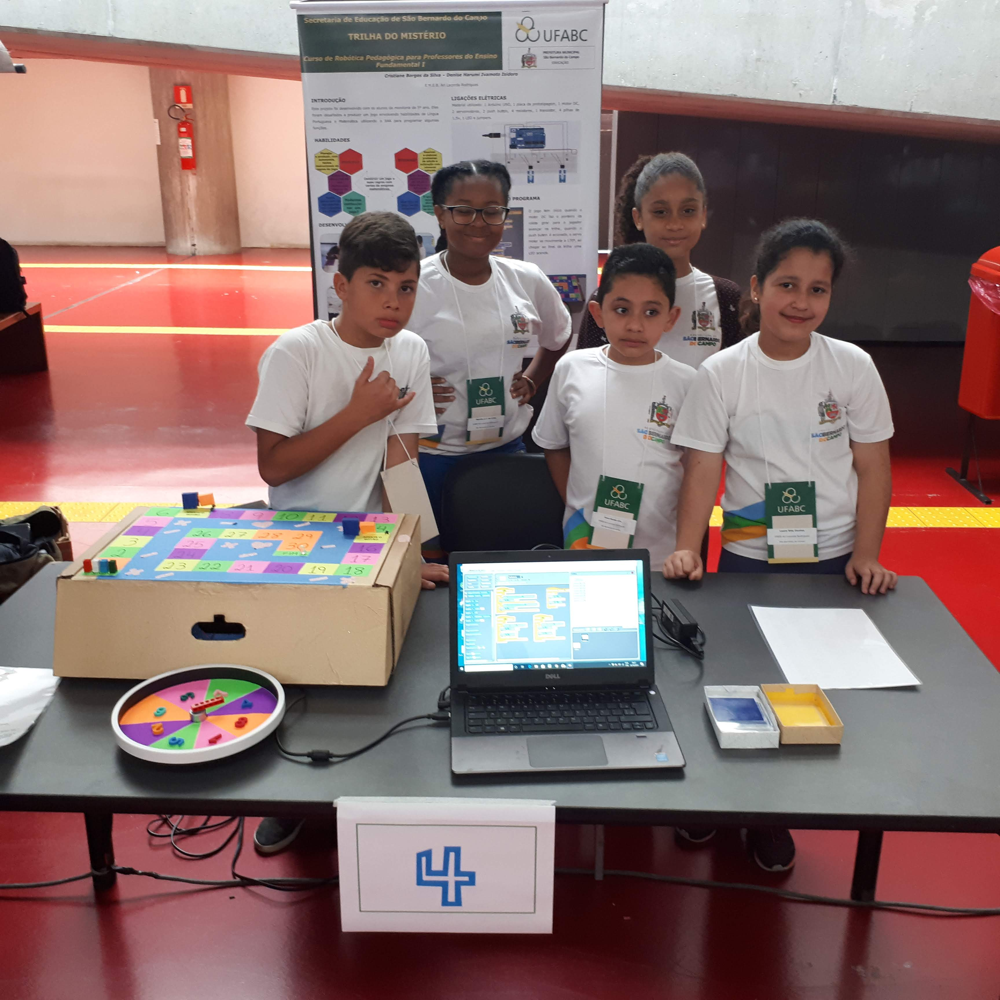

Veja mais: O aniversário do Saci.
A escola Ari Lacerda Rodrigues está localizada na Rua Primeiro de Maio, número 180 - Bairro dos Casa no município de São Bernardo do Campo, no Estado de São Paulo. Nossa escola foi inaugurada no ano de 2003, juntamente com o laboratório de informática. Em 2014 ocorreu a publicação do blog da escola. Esta ferramenta possibilitou a divulgação do projeto político-pedagógico, ampliou a discussão de conteúdos trabalhados em sala de aula bem como trouxe valor ás produções dos alunos, tornando-se disponível para toda a comunidade.
Visite nosso Blog Emeb Ari Lacerda Rodrigues.
2014 - Atividade realizada pelos alunos utilizando a ferramenta power point.
Veja mais: O aniversário do Saci.
2015 - Atividade realizada pelos alunos utilizando a ferramenta Cam Studio.
Veja mais: Ora Bolas - Palavra Cantada.
2017 - Atividade realizada apelos alunos utilizando as ferramentas Google pesquisa e PowerPoint.

Veja mais: Quadrinhas da dengue.
2018 - Atividade realizada pelos alunos utilizando a ferramenta Google Desenhos.
Veja mais: Livro de Ilustrações
2019 - Participação dos alunos na Mostra do Projeto Trilha do Mistério
Além das produções acima, os alunos da Emeb Ari Lacerda Rodrigues juntamente com seus professores já exploraram diversas ferramentas, sites e aplicativos, como por exemplo: Google, Scratch, Code, Arkos, Matific, brincando com Arie, Luz do Saber, kinemaster, Snapchat, Loom, Celestia, Stellarium, Kahoot e gameficação com PowerPoint. Quando pensamos em trabalhar com os alunos, o pensamento se volta para a cena de uma sala de aula dividida em grupos de trabalho coletivo e uma série de materiais sobre as mesas, além do burburinho das crianças curiosas e concentradas no que estão descobrindo e aprendendo. Após esta capacitação, imaginamos principalmente que não estaremos em nossas casas aplicando aulas no ensino remoto. O ensino remoto no ano de 2020 foi um trabalho árduo em nossa escola, assim como em todo o mundo, entretanto, devido ao pouco acesso da informática pela comunidade. Precisamos despertar o sentimento de pertença e o olhar da descoberta em nossos alunos quando tudo isso acabar. Assim, acreditamos que a robótica possa apoiar ativamente os projetos realizados com a turma na volta ás aulas. Quando pensamos em projetos, o tema “Sustentabilidade” nos motiva grandemente sobre a interdisciplinaridade. Assim, queremos com certeza desenvolver este tema com o apoio da robótica em projetos com a turma.


A professora do 4º ano decidiu fazer uma maquete de energia eólica para apresentar na mostra cultural. A questão era: o que utilizar para gerar a energia na maquete? Testamos diferentes tipos de materiais para confeccionar as hélices como: palitos, pedaços de plástico, cata-vento e para girar as hélices, utilizar um ventilador. Não deu certo. No grupo de estudos de papp eu estava fazendo os testes, e uma delas deu a ideia de utilizar o pirocóptero que vem em pirulitos e gerar o vento com um secador de cabelo.Deu super certo e as crianças adoraram. Meu grupo de estudos foi meu MKO.